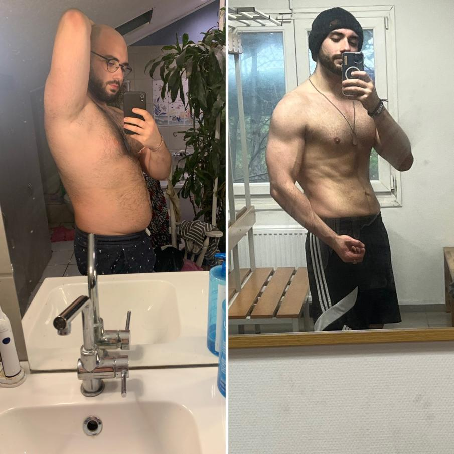

<div class="presentation_coaching--container h-full pb-28">
    <div class="flex items-center justify-evenly flex-wrap">
        <div class="flex flex-col h-[25rem] py-5 justify-between">
            <h2 class="font-bold text-5xl capitalize">Qui est <span
                    class="text-[#4169E1] w-full uppercase">Poutchi</span> ?</h2>
            <div class="w-[1000px]">

                <p class="w-[800px]">
                    Poutchi est un coach sportif passionné et déterminé. Avec une expérience solide dans le crossfit, la
                    salle et d'autres disciplines sportives, il aide ses clients à atteindre leurs objectifs de santé et
                    de forme physique. Ce qui le rend unique, c'est son propre parcours de transformation physique. Il a
                    réussi à perdre une trentaine de kilos, montrant ainsi sa détermination et sa discipline en matière
                    d'entraînement et d'alimentation saine. En plus de son expertise en matière de fitness, Poutchi est
                    également développeur web, ce qui lui permet d'apporter une perspective technique et créative à son
                    travail de coach. Il est prêt à aider tout le monde à se sentir mieux dans leur corps et à atteindre
                    leurs objectifs.
                </p>
            </div>
            <button routerLink="/coaching"
                class="rounded-md bg-blue-600 text-white transition duration-300 p-2 mx-2 w-28 hover:bg-blue-700">
                Coaching
            </button>
        </div>
        <div class="">
            
        </div>
    </div>
</div>